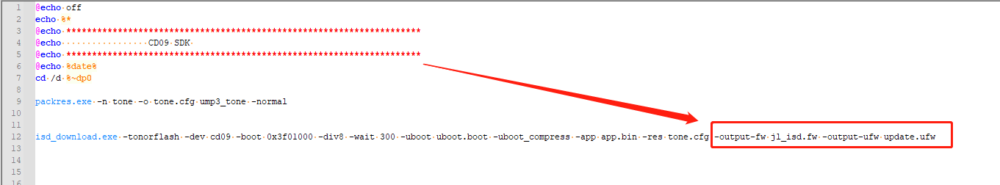
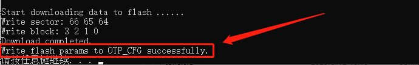

4.4. FLASH Parameter Configuration
Applicable scenario: the SDK needs to enable the write protection, DTR or multi-algorithm authorization feature.
You need to add the OTP_CFG configuration, that is, add a VOTP area, and download flash_params.bin or flash_params_v3.bin. Update the SDK as described below.
4.4.1. Minimum tool versions supporting OTP_CFG
For the SDK to support the OTP_CFG configuration, the related tools must be updated to the following versions (or later).
Tool |
Minimum version |
Description |
|---|---|---|
isd_download.exe |
4.2.54 |
|
1-to-2 programmer |
2.27.7 |
|
1-to-8 programmer |
3.1.22 |
4.4.2. VOTP and OTP areas
VOTP: an area within the flash space that stores the write protection parameters, the DTR parameters and the parameters for accessing the OTP (cmd, addr, size, etc.). It can be programmed by a programmer or by the Forced Upgrade Tool.
OTP: separate from the flash space; it stores the multi-algorithm authorization data and can be programmed only by a programmer. The lock otp feature is not supported yet.
When the SDK calls the syscfg_read_otp or sys_cfg_read_otp function, it first finds the cmd, addr and size parameters stored in the VOTP, then uses these parameters to access the multi-algorithm authorization data stored in the OTP

4.4.3. SDK changes
4.4.3.1. The isd_config.ini file
Add the
OTP_CFG_SIZEsetting to theEXTRA_CFG_PARAMsection of isd_config.iniNote
[EXTRA_CFG_PARAM]
OTP_CFG_SIZE=256;As shown below:

To also enable the FLASH write protection feature, add the following setting to isd_config.ini
Note
[BURNER_PASSTHROUGH_CFG]
FLASH_WRITE_PROTECT=YES;As shown below:

When the FLASH write protection feature is enabled and the chip is programmed with a programmer that supports write protection, the write protection parameters for the chip's FLASH are programmed into the OTP_CFG area
If the flash_params_v3.bin parameters are used, also add the following settings to isd_config.ini
Check the flash spec to confirm whether the DTR and WPS features are supported
Note
[EXTRA_CFG_PARAM] NORFLASH_DTR_EN = 0;#0 disables DTR, 1 enables it
NORFLASH_WPS_EN = 0;#0 disables WPS, 1 enables it
4.4.3.2. The download.bat file
Important
After OTP_CFG (VOTP) is enabled, the jl_isd.bin file is upgraded to a new format,
which fw_add.exe/ufw_maker.exe cannot recognize.
If download.bat generates the final FW/UFW files with fw_add.exe/ufw_maker.exe,
delete the statements related to fw_add.exe/ufw_maker.exe from download.bat.
After deleting the statements related to fw_add.exe/ufw_maker.exe,
add the -output-fw and -output-ufw options after isd_download.exe to generate the final FW/UFW files.
As shown below:

4.4.3.3. Enabling the write protection, DTR and multi-algorithm authorization features
If you need to use the write protection, DTR or multi-algorithm authorization feature during development and debugging,
you can specify the FLASH write protection parameter configuration file with the isd_download.exe option -flash-params.
As shown below:
 Note: flash_params.bin applies to the chips br27, br28, br29, br50, br52, br56, bd47, bd49, bd45, br42, br46, CD09, br60 and br62
Note: flash_params.bin applies to the chips br27, br28, br29, br50, br52, br56, bd47, bd49, bd45, br42, br46, CD09, br60 and br62
flash_params_v3.bin applies to the chips br35, sh58, sh59, mc03 and later new chips
The FLASH VOTP parameters can be updated in the following 2 ways:
1. The FLASH VOTP parameter data can be obtained from the following links:
20260828_flash_params.bin (click here to download_2026_08_28)
20260828_flash_params_v3.bin (click here to download_2026_08_28)2. Add the following setting to the
EXTRA_CFG_PARAMsection of isd_config.ini to support automatic parameter updates from the serverNote
[EXTRA_CFG_PARAM]
REMOTE_FLASH_PARAMS=YES;
After the FLASH VOTP parameter configuration file is set and the device is connected,
running the download.bat batch file downloads the write protection, DTR and multi-algorithm authorization parameters for the FLASH on the development board/device to the VOTP area and prints related information, as shown below:
